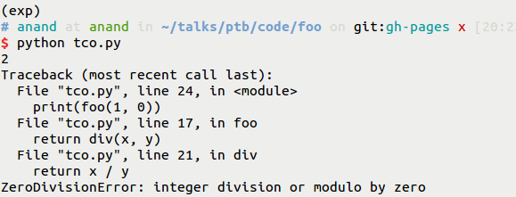
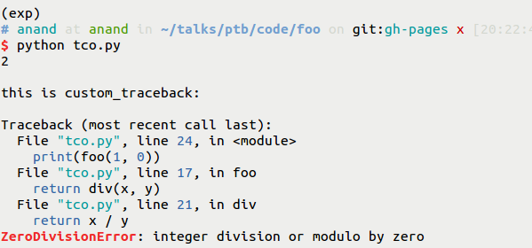
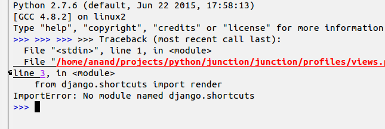
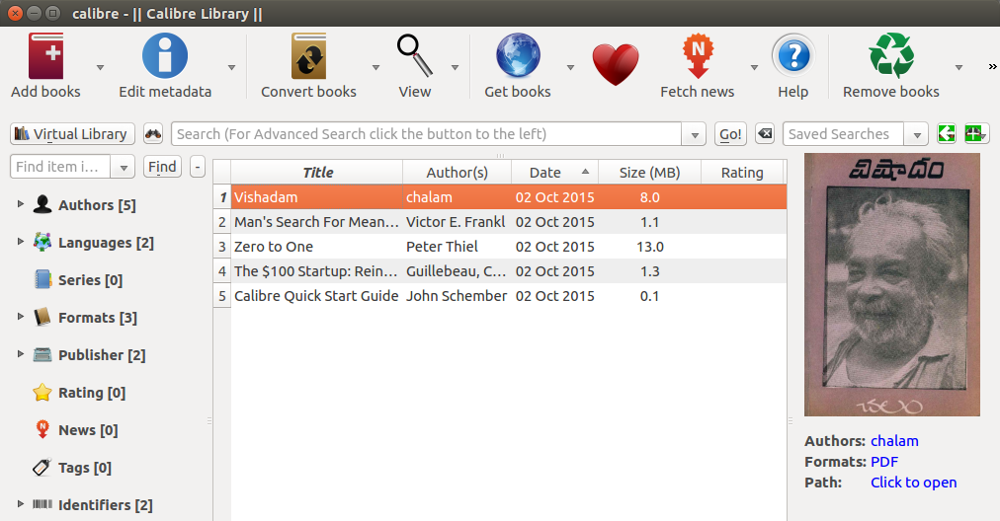
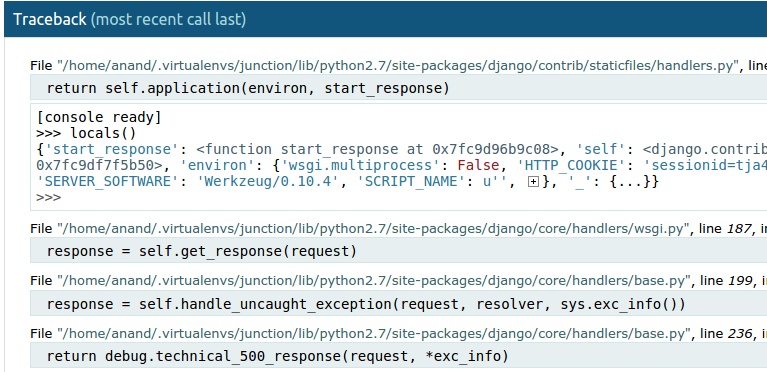
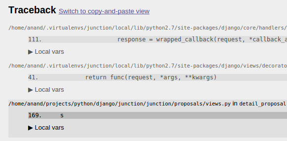
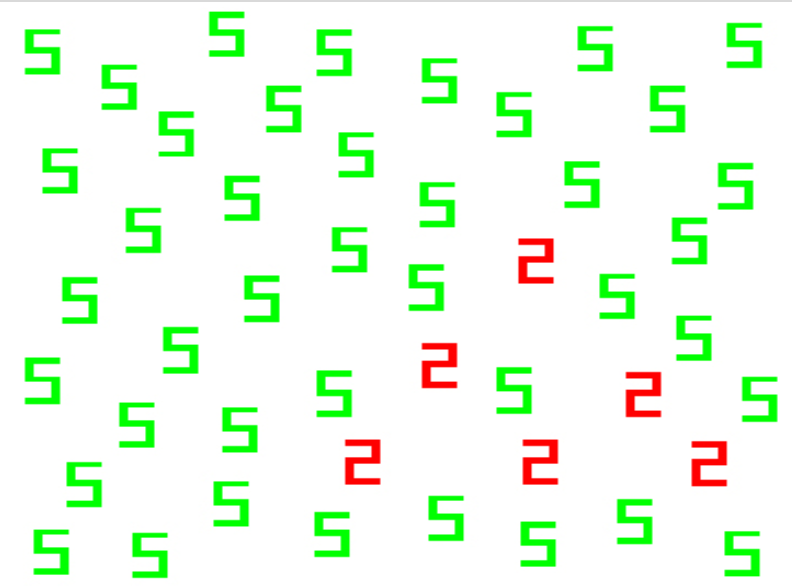

What is traceback?
Default traceback –> Colored traceback.
Things You can do with custom traceback.
Traceback - The forgotten debugging tool.
Towards better Better Traceback
Traceback (most recent call last): File "mail_send.py", line 25, in <module> send_mail() File "mail_send.py", line 21, in send_mail server.sendmail(fromaddr, toaddrs, msg) File "/usr/local/lib/python2.7/smtplib.py", line 724, in sendmail raise SMTPSenderRefused(code, resp, from_addr) smtplib.SMTPSenderRefused: (530, '5.5.1 Authentication Required.')
Trigger point
Occurred point
def custom_traceback(type, value, traceback): print('successfully completed') import sys sys.excepthook = custom_traceback
def custom_traceback(et, ev, tb): traceback.print_exception(et, ev, tb) import sys sys.excepthook = custom_traceback
from pygments import highlight from pygments.formatters import TerminalFormatter from pygments.lexers import PythonTracebackLexer def custom_traceback(et, ev, tb): trace = "".join(traceback.format_exception(et, ev, tb)) print(highlight(code=trace, lexer=PythonTracebackLexer(), formatter=TerminalFormatter())) sys.excepthook = custom_traceback





Automatically print the value of objects when an exception occurs
et, ev, tb = einfo frame_records = inspect.getinnerframes(tb, context) frame, fname, lnum, func, lines, index = frame_record args, varargs, varkw, local_vars = inspect.getargvalues(frame) objects = cgitb.scanvars(reader, frame, local_vars)
Traceback (most recent call last): File "magical_print.py", line 9, in <module> total = sum(num1 + num2 + num3) TypeError: unsupported operand type(s) for +: 'int' and 'str'
Pretty Traceback: File: /home/anand/talks/ptb/code/magical_print.py Call: <module>() Context: ---------> 9 total = num1 + num2 + num Objects: total undefined, num1 = 1, num2 = '2', num3 = 3 TypeError: unsupported operand type(s) for +: 'int' and 'str'
Most developers are interested in bugs in their code(most of the time)
et, ev, tb = einfo frame_records = inspect.getinnerframes(tb, context) frame, fname, lnum, func, lines, index = frame_record if project_path in fname: # process frame

Sometimes looking around might help!
File: /home/anand/talks/ptb/code/calc_slice.py Call: validate_step(step=None) Context: 8 if step == 0: 9 raise Exception("Step cannot be zero.") ---------> 10 if step < 0: 11 reverse = True 12 if step is None:
Magical print
Filtering frames
More context

if (den != 0): result = num / den try: fh = open('pycon.txt') except IOError: print('File not found')
try: # read PEP 3134 # understand exception chaining except LazyToDoThatError: # start using Python 3!!
You can customize traceback as you need.
Zoomout unnecessary info & zoomin necessary info.